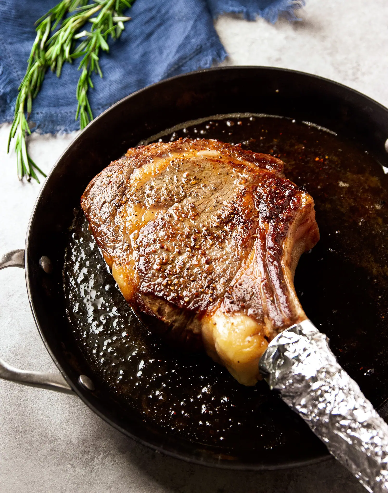

Tomahawk Rib-Eye Steak

If there's a steak that resembles caveman food, it is the tomahawk rib-eye. Also called a cowboy steak, the tomahawk is a bone-in rib-eye that weighs between 30 and 45 ounces. It is nearly 2 inches thick and includes a long bone; this signature "handle" led to the steak's name. This is a large steak that can feed two people, and it can easily be prepared at home.
While a tomahawk steak is one of the more expensive pieces of meat available, it's worth the price. The rib-eye includes some of the most flavorful and tender beef, and the cut is sure to make a big impression.
The tomahawk steak is best pan seared and then finished in the oven. Just before the steak rests, it is basted with butter, roasted garlic, and fresh thyme to result in a juicy, flavorful, and tender piece of meat. Serve it with a full-bodied red wine like cabernet sauvignon and a veggie side, and recreate this classic steakhouse splurge for a fraction of the cost.
- 1 tomahawk rib-eye steak, about 1 3/4 inches thick
- Freshly ground pepper, to taste
- 1 small head garlic
- 2 tablespoons oil, plus more for drizzling (canola or grapeseed)
- 4 tablespoons (1/2 stick) unsalted butter
- 4 large sprigs fresh thyme
Steps to Make It
- Gather the ingredients. Position a rack in the center of the oven and preheat to 350 F.
- Pat the tomahawk steak dry with paper towels.
- Season very liberally with kosher salt and freshly ground pepper. Let the steak come to room temperature.
- Meanwhile, prepare the garlic. Trim off the top 1/4 inch of the garlic bulb. Drizzle with the oil and add a pinch of salt, then wrap in a foil tent, and roast the garlic for 30 minutes, until the cloves are soft. Remove from the oven and allow to cool. Increase the oven temperature to 425 F.
- Optional: Moisten a paper towel and wrap it around the steak's rib bone, then wrap aluminum foil around the paper towel.
- In a large heavy-duty skillet (preferably cast-iron), heat the 2 tablespoons of oil over medium-high heat until it's just starting to smoke. Lay the tomahawk steak into the skillet and sear for 3 minutes without touching it. (Step back a bit since it will smoke and spatter.)
- Using tongs and the bone as a handle, turn the steak over and cook for another 3 minutes without touching it. Using tongs and the bone as a handle, sear the short side of the steak opposite the bone, about 1 minute.
- Transfer the steak to a rimmed baking sheet and place in the oven, roasting 9 to 10 minutes, or until the desired doneness is reached. Alternatively, you can put the steak on a rack fitted into a baking sheet, which will allow air to flow evenly around the steak in the oven, thereby cooking the steak uniformly on both sides.
- Use an instant-read thermometer to measure the steak's internal temperature―125 F for rare, 135 F for medium-rare, or 145 F for medium. The meat will continue to cook while it rests and increase by 5 to 10 degrees, so take that into account when pulling your steak out of the oven.
- While the steak is cooking, add the butter to the skillet and melt over low heat. Squeeze the roasted garlic cloves into the butter, stirring with a wooden spoon to distribute, then add the thyme sprigs and continue to cook, about 2 minutes.
- When the steak is ready, take it out of the oven, and transfer it back into the skillet. Use a spoon to baste the butter and garlic over the steak. Turn the steak, and baste again, about 1 minute total. Transfer the steak to a cutting board, tent it with foil, and let it rest 10 minutes.
- If you've wrapped the bone in the optional paper towel and foil, remove it now.
- Carve the steak against the grain then drizzle with more of the butter and garlic. Or, if the steak is for one person, simply spoon the butter and garlic over the steak. Serve and enjoy.
Tip
- You may need to order a tomahawk steak from your local butcher or supermarket. While most meat departments carry rib-eye steaks, they may need to french the bone for you for a tomahawk.
- Wrapping the bone in aluminum foil is an optional step used at steakhouses to give the bone a nice appearance if the entire steak is served to one diner. You don't have to do this, but it does make a better presentation.
- Use peanut, canola, or grapeseed oil for this recipe. Not olive oil. Since olive oil has a low smoke point, it will smoke too much and may impart a burnt flavor to the meat. The peanut, canola, or grapeseed oil, however, are neutral oils that don't impart any flavor. Once the steak is in the oven, you can proceed with the recipe as written, and if desired, add a splash of olive oil to the skillet with the butter when creating the pan sauce.
Back To Top
Back To Main Menu